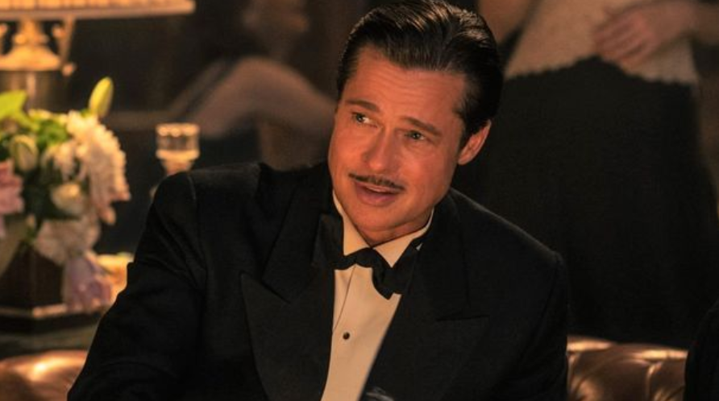
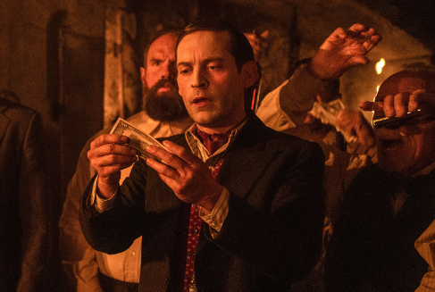

né le 19 janvier 1985 à Providence (Rhode Island), est un réalisateur, scénariste et producteur franco-américain. En 2016, à l'âge de trente ans, il devient le plus jeune réalisateur à remporter l'Oscar de la meilleure réalisation pour son film musical La La Land qui est un énorme succès planétaire, critique et commercial. Son film relance l'intérêt du public pour le domaine de la comédie musicale et fait de lui l'un des piliers du Nouvel âge d'or de la comédie musicale au cinéma aux côtés de Baz Luhrmann et Rob Marshall. En plus de ses six Oscars, La La Land remporte notamment sept Golden Globes, un BAFTA du meilleur réalisateur ainsi qu'une nomination au César du meilleur film étranger. Sa popularité s'accroît avec la sortie du film biographique Le Premier Homme sur la Lune (2018) et plus récemment de Babylon (2023) qui sont tous deux des échecs commerciaux aux États-Unis mais des réussites en Europe.

Elle interprète Nellie Laroy dans le film, Considérée par une partie du public et de la presse comme la « nouvelle Marilyn Monroe » elle se fait d’abord connaître en Australie en 2008 en décrochant un rôle régulier dans le soap opera à succès Les Voisins, rôle qu'elle tiendra quatre ans et qui lui permettra de décrocher deux nominations aux Logie Awards. Elle s'exporte ensuite à Hollywood, où elle devient l'un des personnages centraux de la mini-série historique Pan Am. Trois ans plus tard, elle accède à la notoriété avec son personnage de Naomi Belfort dans le biopic Le Loup de Wall Street de Martin Scorsese aux côtés des stars américaines Leonardo DiCaprio et Jonah Hill, en 2013. Surnommée la « nouvelle reine d'Hollywood », elle confirme son talent dans plusieurs productions à succès comme Diversion où elle donne la réplique à Will Smith ou Tarzan de David Yates. En 2016, elle devient la première interprète du rôle de la docteure Harley Quinn dans les différentes adaptations faites par l'univers cinématographique DC. Elle y interprète le rôle à trois reprises, dans Suicide Squad en 2016, Birds of Prey en 2020 et The Suicide Squad en 2021.
Il interprète Jack Conrad, William Bradley Pitt, dit Brad Pitt, est un acteur et producteur de cinéma américain, né le 18 décembre 1963 à Shawnee (Oklahoma). Symbol des années 1990, Brad Pitt est le premier acteur élu deux fois « Homme le plus sexy du monde » par le magazine People en 1995 et en 2000. À partir de 2002, il s´investit dans la production via sa société Plan B Entertainment avec des films tels que Les Infiltrés de Martin Scorsese et Twelve Years a Slave de Steve McQueen, qui sont chacun récompensés par l'Oscar du meilleur film en 2007 et 2014, The Tree of Life de Terrence Malick, qui reçoit la Palme d'or au Festival de Cannes 2011 ou encore Blonde de Andrew Dominik. Il remporte son premier Oscar individuel en 2020, celui de meilleur acteur dans un second rôle pour le film Once Upon a Time... in Hollywood de Quentin Tarantino. Il est, avec George Clooney, l’un des deux seuls acteurs à avoir remporté les Oscars du meilleur acteur dans un second rôle et du meilleur film.
Il interprète James McKay, Tobey Maguire, de son vrai nom Tobias Vincent Maguire, né le 27 juin 1975 à Santa Monica, en Californie, aux (États-Unis), est un acteur et producteur américain. Il fut révélé à la fin des années 1990 par plusieurs films indépendants salués par la critique : Pleasantville, de Gary Ross (1998), Wonder Boys, de Curtis Hanson (2000), mais surtout deux collaborations avec Ang Lee : Ice Storm (1997) et Chevauchée avec le diable (1999). Tobey Maguire est principalement connu pour avoir tenu le rôle de Peter Parker / Spider-Man dans la première trilogie cinématographique Spider-Man, réalisée par Sam Raimi. Après l'annulation de Spider-Man 4, qui devait sortir en 2011, le rôle est repris dans de nouveaux films autour de l'homme-araignée par Andrew Garfield, puis par Tom Holland. Durant les années 2010, il se fait plus rare sur les écrans : il livre une performance dramatique dans le drame Brothers, de Jim Sheridan (2009), puis donne la réplique à son ami Leonardo DiCaprio dans Gatsby le Magnifique (2013), de Baz Luhrmann. Son dernier rôle important remonte à 2015 : il incarne le champion d'échecs Bobby Fischer dans le film biographique Le Prodige, réalisé par Edward Zwick. Il se concentre depuis sur la production, tout en faisant une apparition remarquée dans Spider-Man: No Way Home où il reprend son rôle de Spider-Man. Il a joué aussi dans film Babylon en 2023.
Veuillez retrouver ci ci-dessous nos liens de réseau